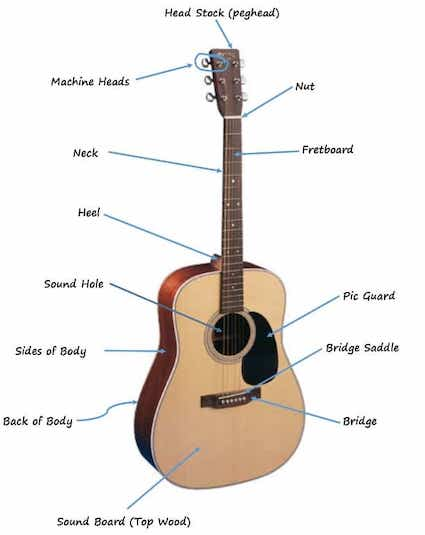
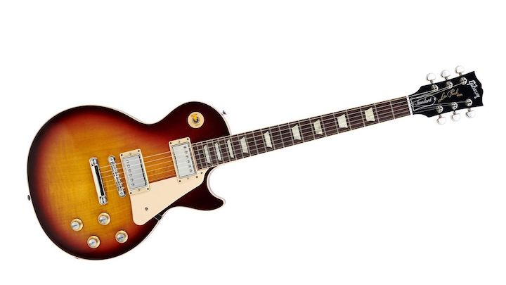

The Acoustic Guitar is most ever guitar player begins with this kind of guitar.
The Electric Guitar is another guitar that as yoiu grow in guitar playing becomes another beast to conquer. This guitar prides itself on being what some of the biggest rock legends played back in the good times of the classic Rock n Roll.
